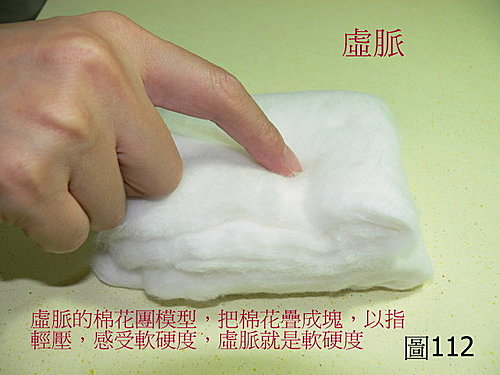
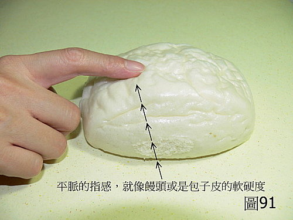
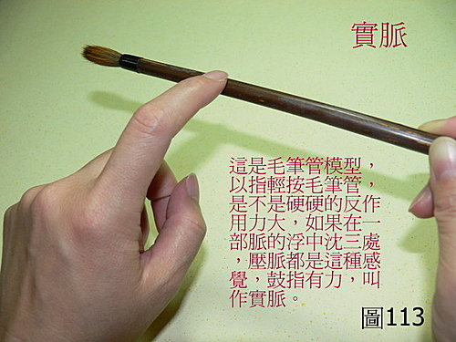

脈理醫理學 33.7：虛脈（一）
作者：陳建元
說明：
〈圖112〉就是〝虛脈〞的模型，叫做「棉花團模型」，把棉花疊成塊，以指輕壓，感受軟硬度，這樣的軟硬度和感覺，就是標準的虛脈。虛脈歷代都以脈無力來描述虛脈，這並沒有錯，但所謂的無力有力，現實上就是指脈管搏擊在手指上，被感覺到的有力無力（反作用力的大小），說得更明確一點，就是軟硬度。
用手指壓一壓〈圖91〉的包子饅頭模型，再用手指壓一壓〈圖112〉的虛脈棉花團模型，再用手指壓一壓〈圖113〉的實脈毛筆管模型。在軟硬度上，包子饅頭居中是平脈，棉花團偏軟是虛脈，毛筆管偏硬是實脈。一軟一硬，等於一陰一陽，陰陽兩途，從此分開。
歷代很多脈書，把28脈當成只是各自分開的28種不同形狀的脈象，並不正確。太極一氣，前後相接，是一個圓周，沒有頭尾，這是自然的道裡。28脈也是這個道理，並不是各自獨立的，如果說28脈是各自獨立的，那如果把到的是這個脈和那個脈的中間空隙地帶？怎麼來稱呼它？因為病譜是連續的，所以同時脈譜也是連續的，28脈是連成一氣的，中間並沒有斷層，並不是各自獨立分開的，在特定的條件下，彼此也能互相轉換，我們就是藉著這種可以轉換的特性，用藥物從外界來操控人體。
包子饅頭是正常平脈，棉花團是正常虛脈，毛筆管是正常實脈，那如果在包子饅頭和棉花團之間叫做什麼？還是叫做虛脈，只是沒有標準虛脈那麼虛，可以叫做偏向虛脈。那如果在包子饅頭和毛筆管之間又叫做什麼？還是叫做實脈，只是沒有標準實脈那麼實，可以叫做偏向實脈。



本質和病機：
不足為虛，病機主陰陽氣血各方面的不足。陰陽氣血各方面的不足，造成脈管脈氣鼓動無力，氣血不充，而成虛脈。
兼脈：
虛脈是指脈的有力無力，即脈的軟硬度，無關脈寬的粗細，故可兼多種脈形。虛浮血虛。虛沉氣虛。虛浮細陰虛。虛沉細陽虛。虛澀因虛致瘀。虛弦因虛而導致氣滯。虛散為元氣散渙不斂。虛滑因虛而致痰。虛緩因虛而水濕停留。虛遲則虛中帶寒。虛數比虛的正氣更虧而兼虛熱。
六部虛脈：
右寸虛：為說話乏力、為氣短、為喘、為容易感冒、為多汗、為傷暑。
右關虛：為腹悶、為消化不良、為脾虛運化不良、為中氣不足。
右尺虛：為腰酸腿軟、為小便頻數、為大便偏軟、為陽痿、為不孕、為帶下多、為月事拖延、為頭暈。
左寸虛：為多汗、為怔忡、為胸悶、為短氣、為頭暈。
左關虛：為頭暈、為目眩、為指甲薄脆、為膽小、為血不營筋而筋肉酸麻或抽掣、為肝風肌肉潤動跳動或不自主抽動。
左尺虛：為陽痿、為不孕、為帶下多、為小便頻數、為腰酸腿軟、為頭暈。
治療藥物：
依所缺陰、陽、氣、血的不同，使用不同的補益藥物。
肺脈：黃耆、黨參、玉竹、款冬花。
脾脈：黃耆、黨參、炙甘草、乾薑、石斛、當歸、山藥。
腎陽：杜仲、菟絲子、山茱萸、鹿茸。
心脈：黨參、炙甘草、柏子仁、當歸、酸棗仁、麥門冬。
肝脈：杜仲、巴戟天、當歸、首烏、熟地。
腎陰：熟地、枸杞子、女貞子、龜板。
【引用請先來信告知徵求同意，若有涉及販售營利等商業行為，版權所有拷貝盜用必究。】
【藥王脈學講壇】http://blog.xuite.net/drjychen/twblog